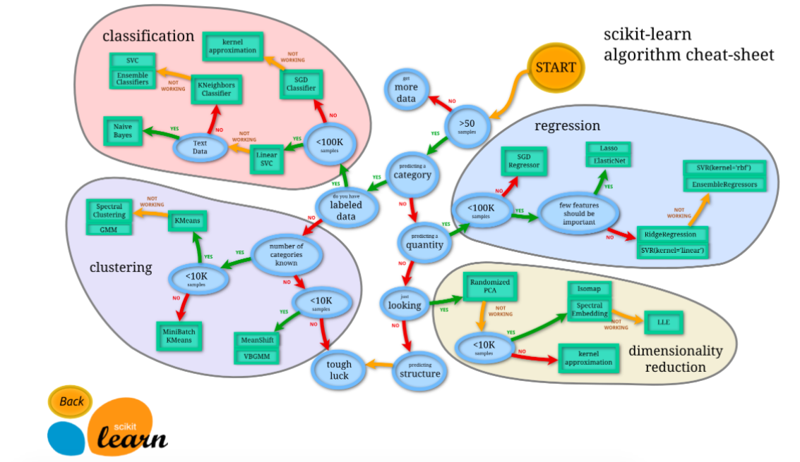

选择学习方法
作者: Alice 编辑: 莫烦 2016-11-03
学习资料:
- 选择模型 流程图
看图选方法
安装完 Sklearn 后，不要直接去用，先了解一下都有什么模型方法，然后选择适当的方法，来达到你的目标。
Sklearn 官网提供了一个流程图，蓝色圆圈内是判断条件，绿色方框内是可以选择的算法：

从 START 开始，首先看数据的样本是否 >50，小于则需要收集更多的数据。
由图中，可以看到算法有四类，分类，回归，聚类，降维。
其中 分类和回归是监督式学习，即每个数据对应一个 label。 聚类 是非监督式学习，即没有 label。 另外一类是 降维，当数据集有很多很多属性的时候，可以通过 降维 算法把属性归纳起来。例如 20 个属性只变成 2 个，注意，这不是挑出 2 个，而是压缩成为 2 个，它们集合了 20 个属性的所有特征，相当于把重要的信息提取的更好，不重要的信息就不要了。
然后看问题属于哪一类问题，是分类还是回归，还是聚类，就选择相应的算法。
当然还要考虑数据的大小，例如 100K 是一个阈值。
可以发现有些方法是既可以作为分类，也可以作为回归，例如 SGD。
如果你觉得这篇文章或视频对你的学习很有帮助, 请你也分享它, 让它能再次帮助到更多的需要学习的人. 莫烦没有正式的经济来源, 如果你也想支持 莫烦Python 并看到更好的教学内容, 赞助他一点点, 作为鼓励他继续开源的动力.